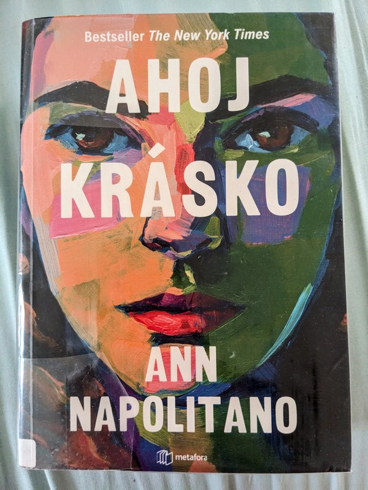
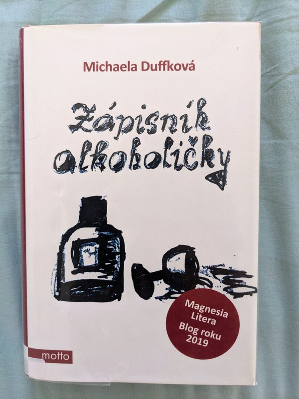
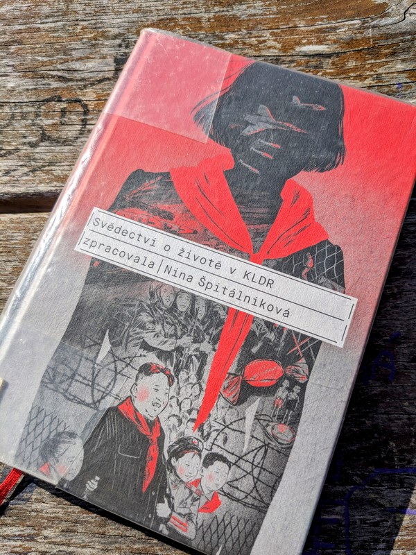
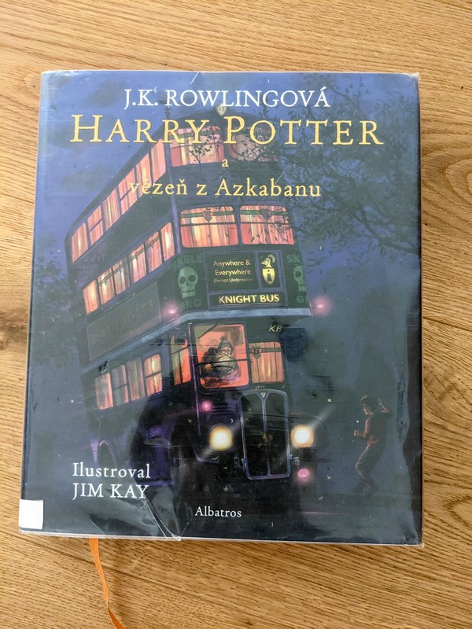
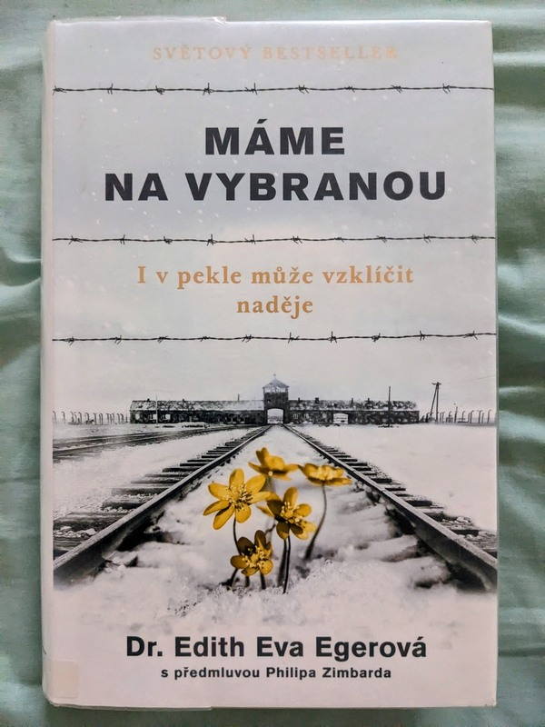
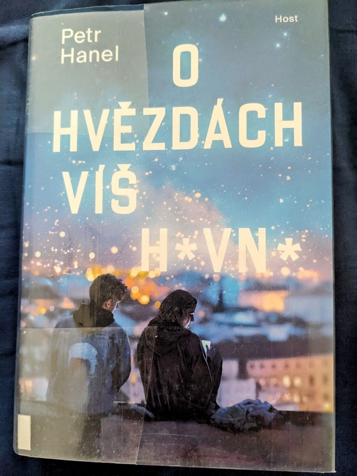
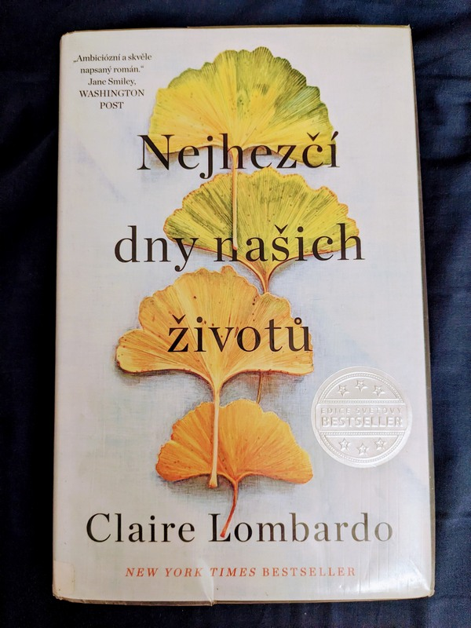
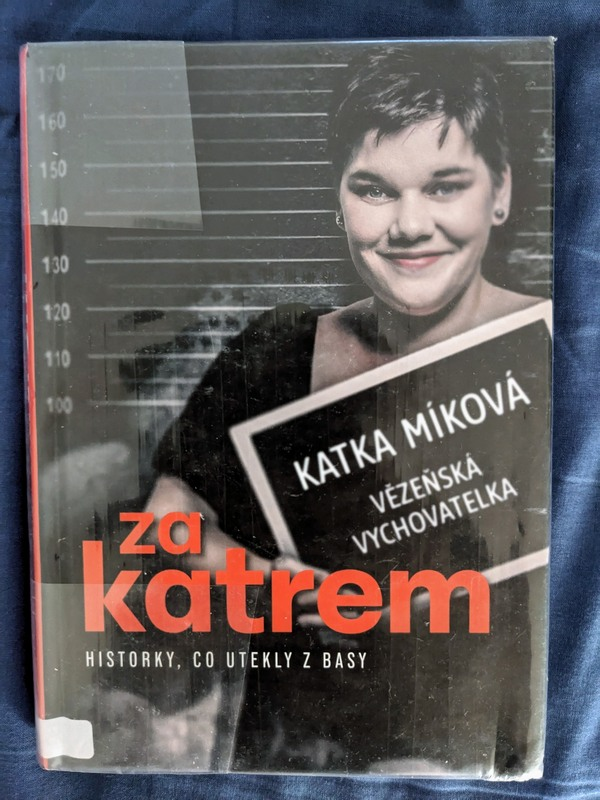

Tak ahoj, léto… Uteklo jsi nějak rychleji než obvykle, ale zůstalo nám po tobě pár hezkých literárních vzpomínek, k jejichž rekapitulaci vás dnes zvu :-)
Ann Napolitano – Ahoj krásko
Rodinná sága mapující životní osudy čtyř sester Padavanových napříč několika dekádami odkazuje na slavný román Malé ženy. I zde je každá z hlavních hrdinek jiný charakterový typ a v průběhu let jim osud chystá nejednu zkoušku a tragédii, která prověří soudržnost jejich rodinných vazeb. Zásadní okamžik však nastává, když nejstarší ze sester – ambiciozní Julia – přivádí do rodiny svého přítele Williama, který nikdy nepoznal teplo rodinného zázemí ani rodičovskou lásku… Přestože příběh je napsaný velmi čtivě, přiznám se, že ve mně nezanechal žádné výraznější emoce. Pokud hledáte nějakou ne úplně hloupou beletrii a neslibujete si od toho nic hlubšího, asi by vás tento román mohl uspokojit. Pro mě byl příběh však příliš prvoplánový a konec vyloženě americký :-)

Michaela Duffková – Zápisník alkoholičky
Ženy a alkoholismus – stále poněkud tabuizované téma, k jehož poodhalení se autorka odhodlala prostřednictvím svého blogu a později i této knihy, v níž zpracovala svůj životní příběh. Čtení je to vskutku neveselé a o to větší zázrak mi přijde, že se z alkoholismu dokázala nakonec dostat a upnout své ambice k založení centra pro pomoc těm, kteří v sobě dostatek takové síly zatím nenašli. Určitě od toho nečekejte literární veledílo, ale spíše syrový příběh, ze kterého vám bude chvílemi zle a jindy zas budete nechápavě kroutit hlavou – za přečtení ale každopádně stojí. Zajímavý pohled vnáší závěrečná slova od autorčiných nejbližších, kteří při ní po celou dobu jejího boje s alkoholismem stáli.

Nina Špitálníková – Svědectví o životě v KLDR
Tato kniha poskládaná z rozhovorů autorky s několika uprchlíky z KLDR mi totálně rozšířila obzory – už jen tím, že každý ze zpovídaných pocházel z jiné sociální vrstvy, jeho život v totalitním státě měl jinou podobu a vývoj a k útěku ho přivedly jiné důvody (v jednom případě byl dokonce nedobrovolný). Je to opravdu čtení jak z jiného světa, pro nás jen stěží pochopitelného. Pro každého, kdo by se chtěl o různých aspektech života v jedné z nejuzavřenějších zemí na světě dozvědět něco víc, je tato kniha cenným zdrojem informací. A musím říct, že mě velmi zaujalo i její grafické zpracování.

J. K. Rowllingová - Harry Potter a vězeň z Azkabanu
Neplecha ukončena – třetí díl pokořen :-)

Dr. Edith Eva Egerová - Máme na vybranou
Zjistil, že i člověk, kterému už na světě nic nezbylo, může prožít pocit štěstí, byť jen na krátký okamžik, když myslí na své milované blízké. Něco se ve mně zlomilo. Rozplakala jsem se. Jako by ke mně znovu z bezútěšné tmy ve vagónu cestou do Osvětimi promlouvala máma. Pamatuj si, že to, co si nosíš v sobě, ti nikdo nemůže vzít. Není v naší moci zastavit temnotu, ale vždycky máme možnost zažehnout světlo.
O druhé světové válce už toho bylo napsáno mnoho, tato kniha se však vymyká mimo jiné tím, že její autorkou je někdo, kdo všechny ty válečné hrůzy na vlastní kůži zažil a přináší svědectví nejen o tom, co se za války dělo, ale především jak těžké bylo se s tím vším vyrovnat a najít v sobě sílu žít dál. Edith Eva Egerová však dokázala nejen to - poté, co si sama své trauma z prožitého holocaustu zpracovala, vystudovala psychologii a coby specialistka na léčbu posttraumatické stresové poruchy svůj život zasvětila pomoci druhým - závěrečnou část knihy tak tvoří také řada příběhů z její praxe. Životní osud dr. Egerové je rozhodně fascinující a určitě může být velkou inspirací pro každého z nás.

Petr Hanel - O hvězdách víš h*vn*
Přiznám se, že nebýt osobního doporučení, asi bych po knížce tohoto názvu a žánru (young-adult) na první dobrou nesáhla. A byla by to ta největší chyba, protože je prostě skvělá! Možná nejsem cílovka, ale autor má dar dokonale vás vrátit v čase, že máte pocit, jako by vám těch -náct najednou zase bylo. Něco takového jsem v sedmnácti přesně chtěla číst. A co je nejvíc super a v žádné jiné knize jsem se s tím dosud nesetkala? Příběh má svůj “soundtrack” - na konkrétních místech knihy jsou skrze QR kódy odkazy na písničky, které tvoří podkres jednotlivých scén. To je tak dokonalé, až se divím, proč to ještě nikoho nenapadlo :-D?? Jakožto hudební staromilec jsem díky tomu objevila spoustu fajn nové hudby a rozšířila si tak obzory. Jinak je to samozřejmě především love-story, ovšem s dramatickým až krimi vyvrcholením, které vás možná překvapí. Hlavním hrdinou a zároveň i hlavním vypravěčem příběhu je sympatický teenager Marky, který vás ve své náctileté a lehce sarkastické přímočarosti vpustí do svého života (a že je exkurz do hlavy náctiletého mladíka pro mě ještě i dnes docela zajímavá sonda), a kterému budete po celou dobu opravdu upřímně fandit a do poslední chvíle doufat v jeho happy-end. V čem je Martyho dospívání jiné oproti teenage letům nás - pamětníků - je každopádně existence sociálních sítí, které hrají v příběhu docela zásadní roli. A v tom může být kniha jaksi poučná i pro nás, kteří už máme děti, co jsou Martymu věkově pomalu blíž než my :-) Smekám před autorem a jeho literárním debutem a moc fandím jeho dalším počinům.

Claire Lombardo - Nejhezčí dny našich životů
K této knize jsem přistupovala možná s až příliš velkým očekáváním podpořeným pochvalnými recenzemi z literárních kuloárů. Musím ale říct, že pro mne se knihou roku rozhodně nestane a to navzdory tomu, že má svou hloubku a příběh je vyprávěn velmi „lidsky“. Co mne ale od začátku dělalo velký problém? Do knihy se vůbec začíst. Zpočátku jsem vůbec nevěděla, která bije – spousta postav, skoky v čase (střídají se kapitoly ze současnosti a minulosti, až se obě časové linky v závěru protnou) a velmi VELMI pomalý rozjezd. Obsahem se jedná o rodinnou ságu – idylické manželství Marilyn a Davida Sorensonových, z něhož se narodí čtyři dcery, každá jiná, každá se svým vlastním více či méně tragickým životním osudem. Tím napovídám, že spíš než oddechové čtení v tomto případě čekejte spíše drama, ovšem s nezaměnitelným americkým happy endem ;-). Podobnost s výše uvedeným románem Ahoj krásko čistě náhodná…?? Hlavní myšlenkou, kterou jsem si z knihy odnesla, je poznatek, že i naprosto idylické manželství rodičů může jejich dětem zadělat na solidní celoživotní trauma a ať se jako rodič snažíte sebevíc, štěstí dětí vždy neleží úplně ve vašich rukou.

Katka Míková - Za katrem
Na autorku této knihy, která v minulosti působila jako vězeňská vychovatelka, jsem poprvé narazila v rozhovoru nějakého magazínu a docela se mi vryla do paměti. Přece jen o tom, co se odehrává za zdmi českých věznic, se nikde až tolik nepíše a nehovoří a pro většinu populace, která je vězeňským prostředím „nepolíbena“, je to všechno obestřeno aurou neznáma a předsudků. Proto jsem po knize Za katrem se zájmem sáhla. Musím říct, že jsem se opravdu dozvěděla spoustu nového, ať už o tom, jak probíhá takový typický den vězně, na co mají trestanci nárok, jaký systém zaměstnanců ve věznicích pracuje či co vůbec předchází nástupu do výkonu trestu. Potud byla kniha opravdu zdrojem zajímavých informací, kterou bych doporučila k přečtení komukoliv. Popravdě mi ale moc neseděla samotná osobnost autorky, respektive styl, jakým o tom všem s rádoby humorem a lehkostí vypráví. Na mnoha místech knihy ten humor vyznívá poněkud arogantně a zle (doslovné citace z korespondence vězňů), jindy spíš zavání trapností („typologie“ zaměstnanců věznic). Chápu autorčinu snahu téma odlehčit i to, že humor máme každý jiný, ale mně to přišlo místy trochu za hranou profesionality. A jak kdosi trefně poznamenal – autorka se na mnoha místech knihy hrdě hlásí k tradici bachařů, která se u nich v rodině „dědí“ – i méně bystrý čtenář si však hravě spočítá, za jakého režimu její předci tuhle práci asi vykonávali a že se tedy možná není zas tak úplně čím chlubit. To už možná trochu spekuluju, ale trocha reflexe by myslím v tomto případě neškodila.
